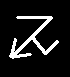

"Warp energy"
This symbol represents the machinations of Clan Skryre and all warpstone devices, particularly the Jezzail. It therefore has the sound of the letter "J". See Skaven army book, page 60, second rune from the left.